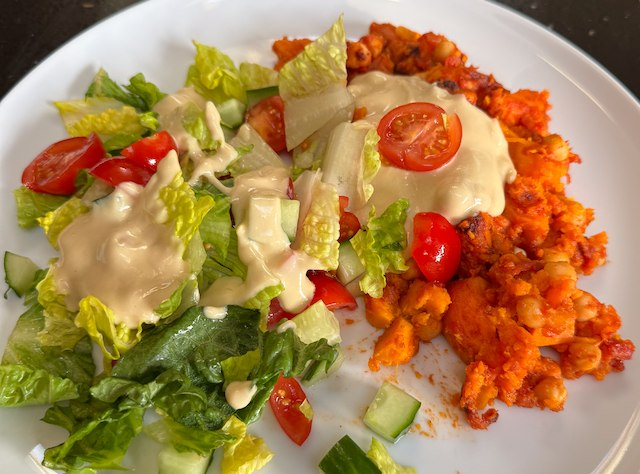

Sarah's Salad

Serves: 3
Cook Time: 1 hour
Ingredients
- Sweet Potatoes
- 1.25kg sweet potatoes, peeled and chipped
- 1 tbsp curry powder
- 1 tbsp cumin
- salt
- olive oil
- 1 400g tin tomatoes, chopped
- 1 tin chickpeas, drained and rinsed
- ¼ tsp sugar
- Dressing
- 200g hummus
- 1 tbsp olive oil
- ½ lemon, juice
- 1 tsp dijon mustard
- 1 tsp maple syrup
- salt and pepper
- Salad
- 100g tomatoes, quartered and salted
- ½ cucumber, dice
- 1 heart of romaine lettuce, torn into pieces
Method
Sweet Potatoes. Peel and chop the sweet potatoes. Mix in curry powder, cumin, salt and olive oil. Cremate in the oven on 200°C fan for 40 min. After 20 min mix in the tomatoes, chickpeas and sugar. When cooked taste for salt.
Dressing. Whisk together the dressing ingredients. Taste for salt.
Assemble. Mix the dressing with the sweet potatoes, plate, and pile the salad on top, with a bit more dressing.